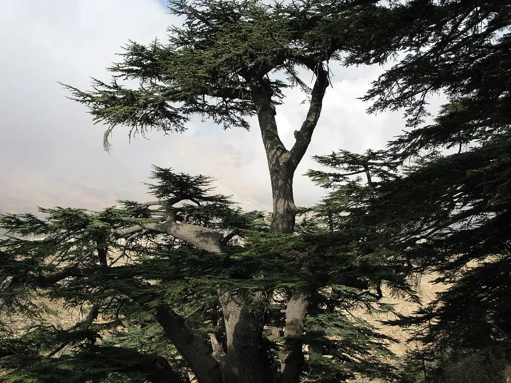

What Is Saint Charbel the Patron Saint Of?
Saint Charbel is honored as a patron of Lebanon and the Lebanese people, and he is invoked above all for healing - especially illnesses that medicine has given up on. He is also a natural patron of hermits, monks, and anyone drawn to silent prayer. Some of this is formal; some is devotional custom. The difference is worth keeping straight, and this page keeps it straight.

Patron of Lebanon
The clearest and most widely recognized patronage is Lebanon. Saint Charbel is the first Lebanese saint of the modern era: a Maronite monk of the Lebanese Maronite Order, born in Bekaa Kafra in 1828, beatified by Pope Paul VI on December 5, 1965, and canonized by the same pope on October 9, 1977. Vatican and Catholic reference sources commonly give his patronage simply as Lebanon, and he is spoken of everywhere as the country's saint.
One nuance is worth keeping. The historic principal patroness of Lebanon is Our Lady of Lebanon, honored at the great shrine of Harissa. Saint Charbel is best described as a patron of Lebanon and its people rather than the country's sole patron - and Lebanese Catholics hold both without any tension, which is why the planned Saint Charbel Trail is meant to run from Annaya to Harissa, joining the two. The Lebanese emigration then carried that devotion worldwide - see Saint Charbel around the world.
Invoked for Healing
By far the most common reason anyone prays to Saint Charbel is healing. The sick have been carried to his tomb at Annaya for more than a century, and the intentions left there cluster around the hardest cases: cancer, tumors, paralysis, blindness, and chronic illness that has not responded to treatment. EWTN's reference entry names him patron of "Lebanon, people who suffer in body and soul, and healing," and popular devotion long ago made him the saint of so-called hopeless cases.
Here is the honest fine print: you will not find a Vatican decree declaring Saint Charbel the patron of the sick or of cancer patients. Lists that give him those patronages are reporting devotional custom, not a formal act of the Church. The custom is real and enormous, but it is honest to name it for what it is - and it changes nothing about the devotion itself, which rests on the Church's actual recognition of his holiness at canonization, not on any list of patronages.
If that is why you came, go straight to our Saint Charbel prayer for healing, or pray the nine-day novena for the person you are carrying in your heart.
Patron of Hermits, Monks, and Silent Prayer
Saint Charbel spent twenty-three years - from 1875 until his death on Christmas Eve 1898 - in the hermitage of Saints Peter and Paul above Annaya, living on next to nothing in almost unbroken silence. He is inseparable from the Maronite Church whose monastic tradition formed him, and his canonization was a defining moment for Maronites worldwide. That makes him a natural patron for hermits and monks, and for anyone trying to carve silence and prayer out of a noisy life - no decree required, just resemblance. Our Become Like Him page is built on exactly that idea.
Why Patronage Matters Less Than Intercession
In Catholic understanding, a patron saint is not a specialist who owns a subject; a patron is a friend in heaven who prays with you and for you. The saints intercede - they carry our needs to God, who remains free. That is why this site never promises outcomes: prayer asks, and God answers as He wills. Whether you come to Saint Charbel as a Lebanese far from home, as the family of someone sick, or simply as someone who needs a quieter soul, what he offers is the same thing he offered from his hermitage: his prayer joined to yours.
Frequently Asked Questions
What is Saint Charbel the patron saint of?
Saint Charbel is honored as a patron of Lebanon and the Lebanese people, is invoked above all for healing, and is a natural patron of hermits, monks, and anyone drawn to silent prayer. Some of this is formal; some is devotional custom.
Is Saint Charbel the patron saint of cancer patients or the sick?
No Vatican decree declares him patron of the sick or of cancer patients. EWTN names him patron of "Lebanon, people who suffer in body and soul, and healing," and popular devotion has made him the saint of so-called hopeless cases - a real and enormous devotional custom, honestly named as such.
Who is the patron saint of Lebanon?
The historic principal patroness of Lebanon is Our Lady of Lebanon, honored at the shrine of Harissa. Saint Charbel, the first Lebanese saint of the modern era, is best described as a patron of Lebanon and its people rather than the country's sole patron - and Lebanese Catholics hold both without any tension.
Why do people pray to Saint Charbel for healing?
The sick have been carried to his tomb at Annaya for more than a century, with intentions clustering around the hardest cases - cancer, tumors, paralysis, blindness, and chronic illness. In Catholic understanding a patron intercedes: prayer asks, and God answers as He wills, so no outcome is ever promised.